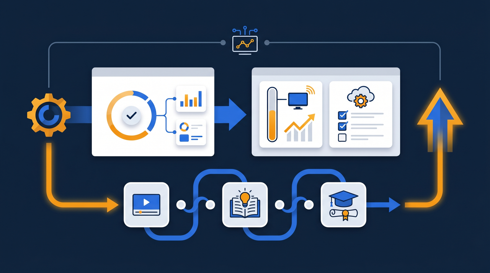
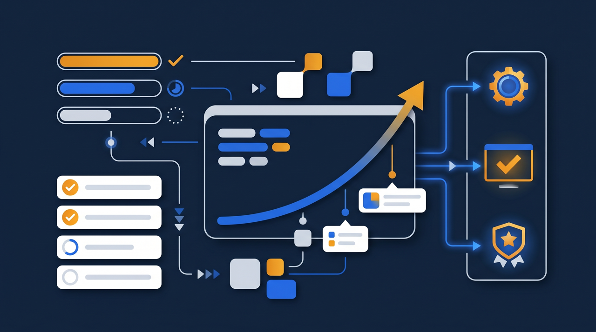
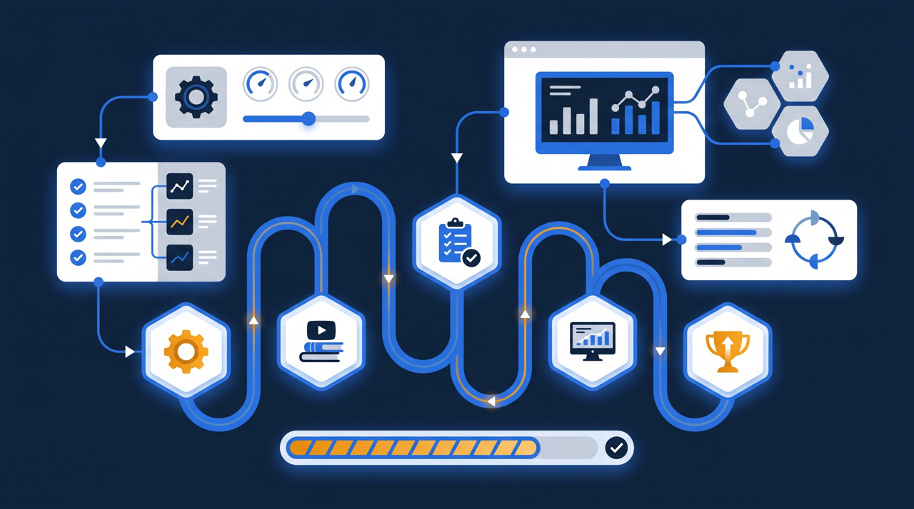

「研修を用意したのに、半分の人が見ていない」——そんな声をよく聞きます。原因を探っていくと、現場スタッフがパソコンの前に座る時間そのものがない、というケースが目立ちます。この記事では、スマホやタブレットで学ぶモバイルラーニングの基礎と、それが受講率にどう効いてくるのかを、導入時の注意点まで含めて現場目線で整理します。

モバイルラーニングとは？まず言葉を整理する
モバイルラーニングは、スマートフォンやタブレットといった携帯端末を使って学習する方法のことです。英語では mobile learning、略して m-learning と呼ばれることもあります。パソコンを使ったeラーニングの延長線上にあるもの、と考えると分かりやすいですよね。
何が違うのかというと、学ぶ「場所」と「タイミング」の自由度です。パソコンでの学習は、どうしてもデスクの前に座る時間が必要になります。ところが、現場で働く人にとって、その時間を確保すること自体が大きな壁になっていることが多いんです。店舗の従業員、工場の作業者、介護の現場で動き回るスタッフ——こうした人たちは、そもそも一日中パソコンを開く機会がありません。
ここでスマホが効いてきます。総務省の白書でも、個人のインターネット利用はスマートフォンが中心になっている傾向が示されています。つまり、ほとんどの人が普段から使い慣れている端末で研修を届けられる、ということなんですね。新しい機器の使い方を覚えてもらう必要がなく、いつものスマホで研修動画を見てもらえる。この「いつもの道具で学べる」という点が、モバイルラーニングの本質的な強みです。
なぜスマホ対応が受講率を左右するのか
研修の受講率が伸びない理由を分解していくと、「内容がつまらない」よりも「そもそも受講する時間と場所がない」という物理的な壁にぶつかっていることが少なくありません。スマホ対応は、この物理的な壁を直接取り除く施策なんです。
受講のハードルが一段下がる
たとえば、パソコンが部署に2台しかない職場を想像してみてください。研修を受けたくても、誰かが使っていれば待つしかありません。「後でやろう」と思っているうちに業務に戻り、結局そのまま——という流れになりがちですよね。これがスマホで見られるなら、待ち時間はゼロです。手元の端末を開けば、その場で始められる。受講を後回しにする理由が一つ消えるわけです。
スキマ時間が学習時間に変わる
通勤中の電車、客足が落ち着いた時間帯、休憩室での10分。こうした細切れの時間は、これまで学習には使えませんでした。けれど、スマホで短い動画が見られるなら話は別です。1本5分程度の研修であれば、スキマ時間にちょうど収まります。まとまった時間を取らなくても、少しずつ進められる。この積み重ねが、受講完了率を押し上げていく傾向があります。
- パソコンの空きを待たずに、その場で受講を始められる
- 通勤・休憩などのスキマ時間を学習に転用できる
- 普段使い慣れた端末なので、操作でつまずきにくい
- 「後でやろう」と先送りされる回数が減る
- 現場スタッフやパソコンを持たない従業員にも研修が届く
ある小売チェーンの例では、これまで店舗のバックヤードのパソコンでしか受講できなかった接客研修を、スタッフ個々のスマホで見られるようにしたところ、受講の進みが目に見えて変わった、という話を聞いたことがあります。仕組みは同じ研修動画でも、「いつでも手元で見られる」という一点が、受講行動を大きく後押しするわけですね。
逆の見方をすれば、研修が受けられない理由の多くは、本人のやる気の問題ではなく、受講の段取りの問題だということでもあります。やる気を出させようと精神論で迫るより、受けやすい環境を整えるほうが、よほど効果が出やすいんです。スマホ対応は、その「受けやすさ」を底上げする、もっとも分かりやすい打ち手の一つだと言えます。
モバイルラーニングが向いている場面
すべての研修がスマホ向きというわけではありません。ただ、次のような場面では、モバイル対応の効果が出やすい傾向があります。

一つ目は、デスクを持たない現場スタッフが多い職場です。店舗、工場、建設現場、介護施設、運送業など、業務の大半を体を動かして行う職種では、パソコン前提の研修はそもそも届きにくいんです。スマホなら、休憩のタイミングや業務の合間に手元で見てもらえます。
二つ目は、人が複数の拠点に分かれている組織です。本社に集めて研修するには交通費も時間もかかりますが、各自のスマホに同じ研修を届ければ、拠点間で教育のばらつきが出にくくなります。多店舗・多拠点の研修管理という観点でも、モバイル対応は相性がよいわけですね。
三つ目は、繰り返し確認したい内容です。安全衛生のルール、接客の基本動作、機器の操作手順——こうした「忘れたときにすぐ見返したい」情報は、手元のスマホにあると便利です。現場で「あれ、どうだったかな」と思った瞬間に動画を開いて確認できる。これは紙のマニュアルやパソコン研修にはない強みだと言えます。
ところで、逆に向きにくいのは、長時間の集中を要する内容や、大きな資料を細かく読み込む必要がある研修です。こうした内容は、スマホだけで完結させようとすると無理が出ます。そういう場合は、概要や導入部分をスマホで、詳細はパソコンで、という役割分担を考えると現実的ですよね。
スマホ向けに「設計」を変えるという発想

ここで一つ、見落とされがちな点があります。それは、パソコン向けの研修をそのままスマホに載せても、期待した効果は出にくい、ということです。「スマホでも見られる」と「スマホで見やすい」は、別物なんですね。
そもそも、人がスマホで動画を見るときの姿勢を思い浮かべてみてください。電車のなか、休憩室の片隅、移動の合間——どれも、じっくり腰を据えて集中する場面ではありませんよね。細切れの時間に、ながら気味に見る。これがスマホ視聴の前提です。だからこそ、パソコンの前で30分集中して見てもらう想定の研修を、そのまま持ち込んでも噛み合わないわけです。視聴の場面に合わせて、中身そのものを組み直す発想が要るんです。
具体的にどう変えるのか。まず、1本を短くすること。パソコンの前にじっくり座る前提なら30分の動画も成立しますが、スキマ時間に見るなら、5分前後に区切ったほうが完走されやすくなります。長い研修は、テーマごとに小分けにして、少しずつ進められるようにする。これが基本です。
次に、画面の小ささを前提にすること。横長のスライドをそのまま映すと、文字が小さくて読めません。重要な言葉は大きく、図は縦向きでも崩れないように。テキストを詰め込みすぎず、要点を絞る。スマホの画面で見て、ストレスなく理解できるかを基準に作り直すわけです。
そして、操作を単純にすること。ログインが複雑だったり、目的の動画にたどり着くまでに何回もタップが必要だったりすると、それだけで離脱が起きます。開いたらすぐ続きから見られる、という手軽さが受講継続には効いてきます。
ある製造業の現場では、もともと1時間あった安全教育の動画を、テーマごとに6本の短い動画に分け直したそうです。すると、まとまった時間が取れずに後回しになっていた受講が、休憩中に1本ずつ進むようになった、と。同じ内容でも、届け方を変えるだけで受講のされ方が変わる——これがモバイルラーニング設計の核心なんです。
ところで、短く区切ることには、もう一つ効用があります。それは、どこでつまずいているかが分かりやすくなることです。1時間の動画では「途中で離脱した」としか分かりませんが、6本に分けてあれば「3本目で止まる人が多い」と見えてきます。そうなれば、その3本目を見直して改善できますよね。届け方を変えることが、教材そのものを良くしていくきっかけにもなる、というわけです。
受講状況をどう管理するか
スマホで研修を届けられるようになると、次に問題になるのが「誰がどこまで見たのか分からない」という管理の壁です。動画を配って終わりにしてしまうと、視聴したかどうかも、理解できたかどうかも把握できません。これでは研修をやった意味が薄れてしまいますよね。
ここで効いてくるのが、学習管理システム（LMS）です。LMSに研修動画を載せておくと、端末がスマホでもパソコンでも、視聴の進み具合や確認テストの結果が記録に残ります。誰が未受講なのかが一目で分かるので、リマインドも的確に出せる。受講を「個人の意識頼み」から「仕組みで追える状態」に変えられるわけです。
加えて、受講記録が残ることには、もう一つ実務上の意味があります。研修の実施を証明する書類が必要になる場面、たとえば人材開発支援助成金のような制度を活用する際に、受講履歴がそのまま根拠資料として使えることがあるんです。スマホで気軽に学べる手軽さと、組織として記録を残す厳密さ。この両立が、モバイルラーニングをLMSと組み合わせる大きな利点になります。
モバイルラーニング導入で気をつけたいこと
最後に、導入時に気をつけたい点を整理しておきます。手軽さが魅力のモバイルラーニングですが、運用設計を抜かすと、現場の反発や形骸化を招くことがあるためです。
まず、業務時間との線引きです。「いつでも学べる」は「いつでも学べと言われている」と受け取られかねません。学習を業務時間内に行うのか、時間外でも認めるのか、ルールをあらかじめ示しておくことが大切です。学習も仕事のうち、という姿勢を会社側が示すと、現場の納得が得やすくなります。
次に、通信環境と端末への配慮です。個人のスマホで動画を見れば通信量がかかります。社内のWi-Fiが使える場所で視聴してもらう、共用のタブレットを用意するなど、負担が個人に偏らない工夫があると安心です。個人端末の利用に抵抗がある人への配慮も、忘れないようにしたいところです。
そして、スマホで完結しないものは無理に押し込まないこと。先ほども触れたように、長文の読み込みや高度な演習はスマホには不向きです。スマホで届けるべき内容と、別の方法がよい内容を見極めて使い分ける。すべてをスマホに寄せるのではなく、向いている部分から取り入れていく、という姿勢が現実的なんですね。
まとめ：受講率は「届け方」で変わる
モバイルラーニングは、スマホやタブレットを使って、いつでもどこでも学べるようにする学習スタイルです。その最大の価値は、パソコンの前に座る時間がない現場スタッフや、拠点に分散した従業員にも、研修を確実に届けられる点にあります。受講のハードルが下がり、スキマ時間が学習時間に変わることで、受講率の改善につながる傾向があります。
ただし、パソコン向けの研修をそのまま載せるのではなく、短く区切る・画面に合わせる・操作を単純にするといった、スマホ向けの設計が効果を左右します。そして、誰がどこまで学んだかを把握するために、学習管理システムと組み合わせて受講状況を記録に残すことが、研修を仕組みとして定着させる鍵になります。
研修が思うように見てもらえない、という悩みの裏には、内容ではなく届け方の問題が隠れていることが少なくありません。まずは現場の人がどんな端末を、どんなタイミングで使っているかを観察するところから、自社に合ったモバイル対応を検討してみてください。
よくある質問
スマートフォンやタブレットといった携帯端末を使って学習することを指します。パソコンの前に座らなくても、移動中や休憩中など、その人の都合のよいタイミングで研修動画やテストに取り組める学習スタイルです。eラーニングの一形態と位置づけられることが多くなっています。
現場で働く人やパソコンを持たない従業員にとって、受講のハードルが下がるためです。パソコンの空きを待つ必要がなく、手元の端末ですぐに学べるため、受講が後回しにされにくくなる傾向があります。受講機会そのものが増えることが、受講率の改善につながると考えられています。
見られること自体は可能なことが多いものの、文字が小さい、横長の資料が読みにくいといった理由で、最後まで視聴されないことがあります。スマホでの視聴を前提に、1本を短く区切る、縦向きでも読める文字サイズにするなど、画面に合わせた設計を加えると効果が高まりやすくなります。
社内のWi-Fiが使える環境で視聴してもらう、業務時間内に学習時間を設けるといった運用上の配慮で対応できることが多いです。個人端末の利用に抵抗がある場合は、共用のタブレットを用意する方法もあります。学習の目的と運用ルールをあらかじめ伝えておくと、現場の納得を得やすくなります。
店舗・工場・建設・介護・運送など、デスクを持たない現場スタッフが多い業種で効果が出やすい傾向があります。また、外回りの営業や多拠点に人が分散している組織でも、移動時間やスキマ時間を学習に活用しやすくなります。
誰がどこまで視聴したか、確認テストに合格したかを把握できる学習管理システム（LMS）に教材を載せると、端末がスマホでもパソコンでも一元的に記録できます。受講状況が記録に残るため、人材開発支援助成金のように研修の実施を証明する書類が求められる場面でも整理しやすくなります。